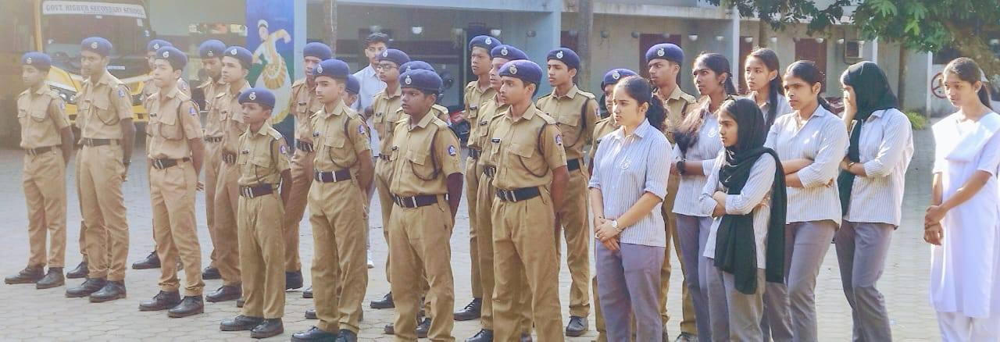
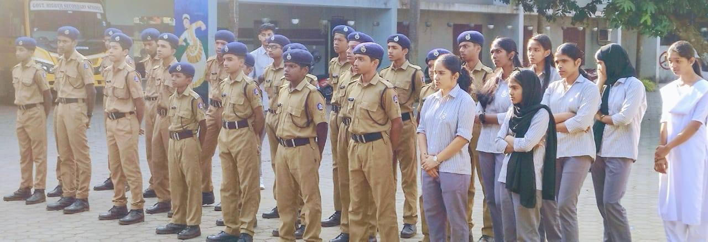

SPC – Student Police Cadet
Instilling Discipline, Responsibility & Civic Sense
The Student Police Cadet (SPC) Project is a flagship youth development initiative jointly implemented by the Kerala Police and the Education Department. At GHSS Kadayiruppu, the SPC unit plays a crucial role in instilling discipline, leadership, and social commitment in students.
SPC cadets are trained in various areas including traffic rules, disaster management, first aid, human rights, environmental conservation, and community service. Through physical training, parade drills, and leadership camps, the program prepares students to be law-abiding, empathetic, and proactive citizens.
Regular community-based activities, such as anti-drug awareness campaigns, environmental drives, and road safety programs, help cadets build strong moral values and take ownership of their social responsibilities. It also strengthens the bond between students, law enforcement, and the larger society.
The SPC unit fosters team spirit and national pride while nurturing the leadership potential of each cadet. Through training sessions, inter-school competitions, and field visits to police stations and academies, the students gain real-life exposure and confidence.
- Parade Training & Fitness Activities
- Law Awareness & Disaster Preparedness
- Community Policing Projects
- Drug Awareness & Cyber Safety Programs
- Visits to Police Camps & Institutions


 
